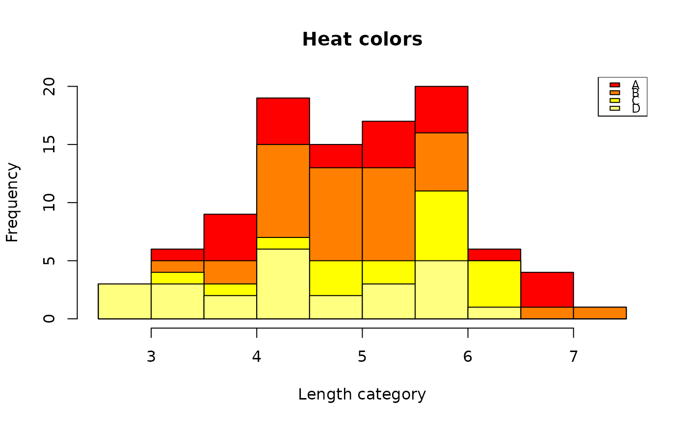
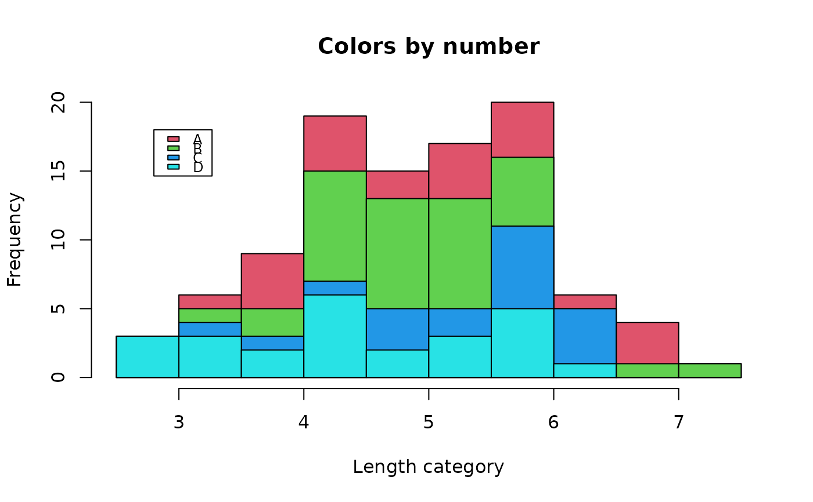
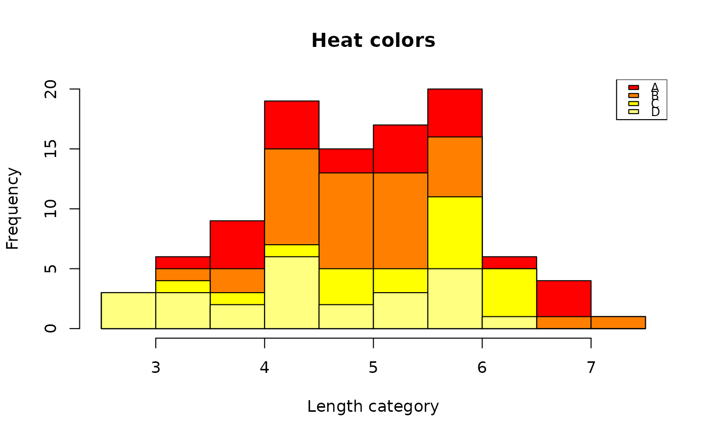
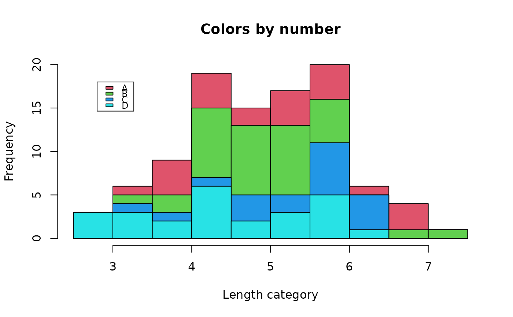

Histogram "stacked" by categories
histStack.RdHistogram of a quantitative variable with bars that are "stacked" by the values of a factor variable.
Usage
histStack(x,...)
# S3 method for class 'formula'
histStack(x,data,breaks="Sturges",col="rainbow",
right=TRUE,main="",xlab=NULL,legend.pos=NULL,cex.legend=0.75,...)
# Default S3 method
histStack(x,z,breaks="Sturges",col="rainbow",
right=TRUE,main="",xlab=NULL,legend.pos=NULL,cex.legend=0.75,...)Arguments
- x
A vector of quantitative data or a formula of the form x~z (see z below).
- z
A vector of categorical data (a factor) that will define the “stacks”.
- data
A data frame that contains both x and z.
- breaks
Breaks to use in categorizing values of x.
- col
Either a vector of colors in any legitimate form or a character string that specifies a function that requires only the length of the vector as an argument and will return a vector of colors with that length. (see Details)
- right
A logical that indicates whether the bins are right-open (left-closed; =TRUE) or right-closed (left-open; =FALSE; default).
- main
A character string that forms the main title for the plot.
- xlab
A character string for labeling the x-axis.
- legend.pos
A character string or two numeric values indicating the position for the stacking legend.
- cex.legend
A numeric character expansion value for the legend. Values less than 1 will make the legend smaller.
- ...
Additional arguments sent to the hist function.
Details
histStack displays a “stacked histogram” while using many of the same arguments as hist(). The argument z will be converted to a factor with a warning if it is not already a factor.
The color functions in grDevices (e.g. "gray.colors") should always be valid when passed as the col argument. Any function that will return a vector of n colors when called with a single argument n and that exists in the current environment should work. An error will occur if length(col)==1 and the value is not a function as described for col (e.g., col="blue" will result in an error).If fewer colors than levels of z are passed, they will be recycled.
Examples
set.seed(409)
df<-data.frame(len=rnorm(100)+5,
grp=sample(c("A","B","C","D"),100,replace=TRUE))
histStack(len~grp,data=df,main="Default (rainbow) colors",
xlab="Length category")
#> Warning: z was converted to a factor
 histStack(len~grp,data=df,col="heat.colors",main="Heat colors",
xlab="Length category",legend.pos="topright")
#> Warning: z was converted to a factor

histStack(len~grp,data=df,col=2:5,main="Colors by number",
xlab="Length category",legend.pos=c(2.8,18))
#> Warning: z was converted to a factor

histStack(len~grp,data=df,col="heat.colors",main="Heat colors",
xlab="Length category",legend.pos="topright")
#> Warning: z was converted to a factor

histStack(len~grp,data=df,col=2:5,main="Colors by number",
xlab="Length category",legend.pos=c(2.8,18))
#> Warning: z was converted to a factor
